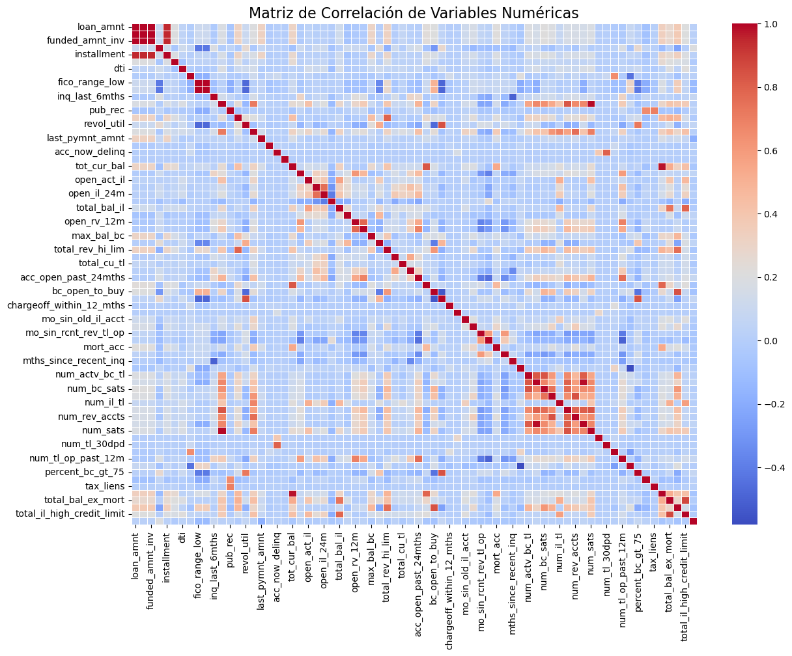

Proyecto Integrador de Aprendizaje Automático#
El crecimiento de las plataformas de préstamos en línea ha generado grandes volúmenes de datos financieros y socioeconómicos que representan una oportunidad para aplicar técnicas de aprendizaje automático en la predicción del riesgo crediticio. Con la plataforma de Lending Club nos proporciona un extenso conjunto de información histórica sobre los préstamos emitidos entre 2007 y 2020, al igual que variables relacionadas con el perfil del que solicita, condiciones del crédito y su estado.
El presente proyecto tiene como objetivo construir un modelo de clasificación supervisada capaz de predecir si un préstamo será pagado en su totalidad o entrará en incumplimiento. Por eso, se comparan dos enfoques: scikit-learn y con PySpark. Evaluando el rendimiento de ambos como métricas de clasificación y tiempos de ejecusión, junto con la técnica LIME para interpretar los resultados.
Para ello, iniciamos importando las librerias que necesitamos
import pandas as pd
import numpy as np
import matplotlib.pyplot as plt
import seaborn as sns
from sklearn.impute import SimpleImputer
from sklearn.preprocessing import StandardScaler, OneHotEncoder
from sklearn.ensemble import RandomForestRegressor
from sklearn.compose import ColumnTransformer
from sklearn.model_selection import train_test_split, cross_val_score
from sklearn.neighbors import KNeighborsRegressor, KNeighborsClassifier
from sklearn.metrics import classification_report, confusion_matrix, accuracy_score
from sklearn.decomposition import PCA
from sklearn.pipeline import Pipeline
from sklearn.metrics import precision_score, recall_score, f1_score
from sklearn.model_selection import GridSearchCV
from sklearn.linear_model import Ridge, Lasso, LogisticRegression, LinearRegression
from sklearn.metrics import (mean_absolute_error, mean_squared_error, r2_score,
confusion_matrix, classification_report, roc_auc_score, roc_curve)
import warnings
warnings.filterwarnings("ignore", category=UserWarning)
warnings.filterwarnings("ignore", category=FutureWarning)
Leemos nuestro dataset sugerido
dataset = pd.read_csv('accepted_2007_to_2018Q4.csv.gz', sep=',')
---------------------------------------------------------------------------
FileNotFoundError Traceback (most recent call last)
Cell In[2], line 1
----> 1 dataset = pd.read_csv('accepted_2007_to_2018Q4.csv.gz', sep=',')
File ~\miniconda3\envs\ml_venv\lib\site-packages\pandas\io\parsers\readers.py:1026, in read_csv(filepath_or_buffer, sep, delimiter, header, names, index_col, usecols, dtype, engine, converters, true_values, false_values, skipinitialspace, skiprows, skipfooter, nrows, na_values, keep_default_na, na_filter, verbose, skip_blank_lines, parse_dates, infer_datetime_format, keep_date_col, date_parser, date_format, dayfirst, cache_dates, iterator, chunksize, compression, thousands, decimal, lineterminator, quotechar, quoting, doublequote, escapechar, comment, encoding, encoding_errors, dialect, on_bad_lines, delim_whitespace, low_memory, memory_map, float_precision, storage_options, dtype_backend)
1013 kwds_defaults = _refine_defaults_read(
1014 dialect,
1015 delimiter,
(...)
1022 dtype_backend=dtype_backend,
1023 )
1024 kwds.update(kwds_defaults)
-> 1026 return _read(filepath_or_buffer, kwds)
File ~\miniconda3\envs\ml_venv\lib\site-packages\pandas\io\parsers\readers.py:620, in _read(filepath_or_buffer, kwds)
617 _validate_names(kwds.get("names", None))
619 # Create the parser.
--> 620 parser = TextFileReader(filepath_or_buffer, **kwds)
622 if chunksize or iterator:
623 return parser
File ~\miniconda3\envs\ml_venv\lib\site-packages\pandas\io\parsers\readers.py:1620, in TextFileReader.__init__(self, f, engine, **kwds)
1617 self.options["has_index_names"] = kwds["has_index_names"]
1619 self.handles: IOHandles | None = None
-> 1620 self._engine = self._make_engine(f, self.engine)
File ~\miniconda3\envs\ml_venv\lib\site-packages\pandas\io\parsers\readers.py:1880, in TextFileReader._make_engine(self, f, engine)
1878 if "b" not in mode:
1879 mode += "b"
-> 1880 self.handles = get_handle(
1881 f,
1882 mode,
1883 encoding=self.options.get("encoding", None),
1884 compression=self.options.get("compression", None),
1885 memory_map=self.options.get("memory_map", False),
1886 is_text=is_text,
1887 errors=self.options.get("encoding_errors", "strict"),
1888 storage_options=self.options.get("storage_options", None),
1889 )
1890 assert self.handles is not None
1891 f = self.handles.handle
File ~\miniconda3\envs\ml_venv\lib\site-packages\pandas\io\common.py:765, in get_handle(path_or_buf, mode, encoding, compression, memory_map, is_text, errors, storage_options)
761 if compression == "gzip":
762 if isinstance(handle, str):
763 # error: Incompatible types in assignment (expression has type
764 # "GzipFile", variable has type "Union[str, BaseBuffer]")
--> 765 handle = gzip.GzipFile( # type: ignore[assignment]
766 filename=handle,
767 mode=ioargs.mode,
768 **compression_args,
769 )
770 else:
771 handle = gzip.GzipFile(
772 # No overload variant of "GzipFile" matches argument types
773 # "Union[str, BaseBuffer]", "str", "Dict[str, Any]"
(...)
776 **compression_args,
777 )
File ~\miniconda3\envs\ml_venv\lib\gzip.py:173, in GzipFile.__init__(self, filename, mode, compresslevel, fileobj, mtime)
171 mode += 'b'
172 if fileobj is None:
--> 173 fileobj = self.myfileobj = builtins.open(filename, mode or 'rb')
174 if filename is None:
175 filename = getattr(fileobj, 'name', '')
FileNotFoundError: [Errno 2] No such file or directory: 'accepted_2007_to_2018Q4.csv.gz'
El tamaño de nuestro dataset:
print("Dimensiones:", dataset.shape)
Dimensiones: (2260701, 151)
Revisamos las primeras 5 filas del dataset:
dataset.head()
| id | member_id | loan_amnt | funded_amnt | funded_amnt_inv | term | int_rate | installment | grade | sub_grade | ... | hardship_payoff_balance_amount | hardship_last_payment_amount | disbursement_method | debt_settlement_flag | debt_settlement_flag_date | settlement_status | settlement_date | settlement_amount | settlement_percentage | settlement_term | |
|---|---|---|---|---|---|---|---|---|---|---|---|---|---|---|---|---|---|---|---|---|---|
| 0 | 68407277 | NaN | 3600.0 | 3600.0 | 3600.0 | 36 months | 13.99 | 123.03 | C | C4 | ... | NaN | NaN | Cash | N | NaN | NaN | NaN | NaN | NaN | NaN |
| 1 | 68355089 | NaN | 24700.0 | 24700.0 | 24700.0 | 36 months | 11.99 | 820.28 | C | C1 | ... | NaN | NaN | Cash | N | NaN | NaN | NaN | NaN | NaN | NaN |
| 2 | 68341763 | NaN | 20000.0 | 20000.0 | 20000.0 | 60 months | 10.78 | 432.66 | B | B4 | ... | NaN | NaN | Cash | N | NaN | NaN | NaN | NaN | NaN | NaN |
| 3 | 66310712 | NaN | 35000.0 | 35000.0 | 35000.0 | 60 months | 14.85 | 829.90 | C | C5 | ... | NaN | NaN | Cash | N | NaN | NaN | NaN | NaN | NaN | NaN |
| 4 | 68476807 | NaN | 10400.0 | 10400.0 | 10400.0 | 60 months | 22.45 | 289.91 | F | F1 | ... | NaN | NaN | Cash | N | NaN | NaN | NaN | NaN | NaN | NaN |
5 rows × 151 columns
Las 5 últimas filas:
dataset.tail()
| id | member_id | loan_amnt | funded_amnt | funded_amnt_inv | term | int_rate | installment | grade | sub_grade | ... | hardship_payoff_balance_amount | hardship_last_payment_amount | disbursement_method | debt_settlement_flag | debt_settlement_flag_date | settlement_status | settlement_date | settlement_amount | settlement_percentage | settlement_term | |
|---|---|---|---|---|---|---|---|---|---|---|---|---|---|---|---|---|---|---|---|---|---|
| 2260696 | 88985880 | NaN | 40000.0 | 40000.0 | 40000.0 | 60 months | 10.49 | 859.56 | B | B3 | ... | NaN | NaN | Cash | N | NaN | NaN | NaN | NaN | NaN | NaN |
| 2260697 | 88224441 | NaN | 24000.0 | 24000.0 | 24000.0 | 60 months | 14.49 | 564.56 | C | C4 | ... | NaN | NaN | Cash | Y | Mar-2019 | ACTIVE | Mar-2019 | 10000.0 | 44.82 | 1.0 |
| 2260698 | 88215728 | NaN | 14000.0 | 14000.0 | 14000.0 | 60 months | 14.49 | 329.33 | C | C4 | ... | NaN | NaN | Cash | N | NaN | NaN | NaN | NaN | NaN | NaN |
| 2260699 | Total amount funded in policy code 1: 1465324575 | NaN | NaN | NaN | NaN | NaN | NaN | NaN | NaN | NaN | ... | NaN | NaN | NaN | NaN | NaN | NaN | NaN | NaN | NaN | NaN |
| 2260700 | Total amount funded in policy code 2: 521953170 | NaN | NaN | NaN | NaN | NaN | NaN | NaN | NaN | NaN | ... | NaN | NaN | NaN | NaN | NaN | NaN | NaN | NaN | NaN | NaN |
5 rows × 151 columns
Vemos que siguen en orden la información. Ahora vemos la naturaleza de los datos:
dataset.info()
<class 'pandas.core.frame.DataFrame'>
RangeIndex: 2260701 entries, 0 to 2260700
Columns: 151 entries, id to settlement_term
dtypes: float64(113), object(38)
memory usage: 2.5+ GB
Vemos que hay 113 variables numéricas y 38 variables categóricas. Aplicando esta función vemos que puede haber presencia de datos faltantes, por ello vamos a ver en qué variables se están presentando dichos faltantes.
dataset.describe()
| member_id | loan_amnt | funded_amnt | funded_amnt_inv | int_rate | installment | annual_inc | dti | delinq_2yrs | fico_range_low | ... | deferral_term | hardship_amount | hardship_length | hardship_dpd | orig_projected_additional_accrued_interest | hardship_payoff_balance_amount | hardship_last_payment_amount | settlement_amount | settlement_percentage | settlement_term | |
|---|---|---|---|---|---|---|---|---|---|---|---|---|---|---|---|---|---|---|---|---|---|
| count | 0.0 | 2.260668e+06 | 2.260668e+06 | 2.260668e+06 | 2.260668e+06 | 2.260668e+06 | 2.260664e+06 | 2.258957e+06 | 2.260639e+06 | 2.260668e+06 | ... | 10917.0 | 10917.000000 | 10917.0 | 10917.000000 | 8651.000000 | 10917.000000 | 10917.000000 | 34246.000000 | 34246.000000 | 34246.000000 |
| mean | NaN | 1.504693e+04 | 1.504166e+04 | 1.502344e+04 | 1.309283e+01 | 4.458068e+02 | 7.799243e+04 | 1.882420e+01 | 3.068792e-01 | 6.985882e+02 | ... | 3.0 | 155.045981 | 3.0 | 13.743886 | 454.798089 | 11636.883942 | 193.994321 | 5010.664267 | 47.780365 | 13.191322 |
| std | NaN | 9.190245e+03 | 9.188413e+03 | 9.192332e+03 | 4.832138e+00 | 2.671735e+02 | 1.126962e+05 | 1.418333e+01 | 8.672303e-01 | 3.301038e+01 | ... | 0.0 | 129.040594 | 0.0 | 9.671178 | 375.385500 | 7625.988281 | 198.629496 | 3693.122590 | 7.311822 | 8.159980 |
| min | NaN | 5.000000e+02 | 5.000000e+02 | 0.000000e+00 | 5.310000e+00 | 4.930000e+00 | 0.000000e+00 | -1.000000e+00 | 0.000000e+00 | 6.100000e+02 | ... | 3.0 | 0.640000 | 3.0 | 0.000000 | 1.920000 | 55.730000 | 0.010000 | 44.210000 | 0.200000 | 0.000000 |
| 25% | NaN | 8.000000e+03 | 8.000000e+03 | 8.000000e+03 | 9.490000e+00 | 2.516500e+02 | 4.600000e+04 | 1.189000e+01 | 0.000000e+00 | 6.750000e+02 | ... | 3.0 | 59.440000 | 3.0 | 5.000000 | 175.230000 | 5627.000000 | 44.440000 | 2208.000000 | 45.000000 | 6.000000 |
| 50% | NaN | 1.290000e+04 | 1.287500e+04 | 1.280000e+04 | 1.262000e+01 | 3.779900e+02 | 6.500000e+04 | 1.784000e+01 | 0.000000e+00 | 6.900000e+02 | ... | 3.0 | 119.140000 | 3.0 | 15.000000 | 352.770000 | 10028.390000 | 133.160000 | 4146.110000 | 45.000000 | 14.000000 |
| 75% | NaN | 2.000000e+04 | 2.000000e+04 | 2.000000e+04 | 1.599000e+01 | 5.933200e+02 | 9.300000e+04 | 2.449000e+01 | 0.000000e+00 | 7.150000e+02 | ... | 3.0 | 213.260000 | 3.0 | 22.000000 | 620.175000 | 16151.890000 | 284.190000 | 6850.172500 | 50.000000 | 18.000000 |
| max | NaN | 4.000000e+04 | 4.000000e+04 | 4.000000e+04 | 3.099000e+01 | 1.719830e+03 | 1.100000e+08 | 9.990000e+02 | 5.800000e+01 | 8.450000e+02 | ... | 3.0 | 943.940000 | 3.0 | 37.000000 | 2680.890000 | 40306.410000 | 1407.860000 | 33601.000000 | 521.350000 | 181.000000 |
8 rows × 113 columns
dataset.isnull().sum()
id 0
member_id 2260701
loan_amnt 33
funded_amnt 33
funded_amnt_inv 33
...
settlement_status 2226455
settlement_date 2226455
settlement_amount 2226455
settlement_percentage 2226455
settlement_term 2226455
Length: 151, dtype: int64
total_registros = len(dataset)
faltantes_por_columna = dataset.isnull().sum()
porcentaje_faltantes = (faltantes_por_columna / total_registros) * 100
analisis_faltantes = pd.DataFrame({
'Valores_Faltantes': faltantes_por_columna,
'Porcentaje_Faltantes': porcentaje_faltantes
})
print("=== Análisis de faltantes por variable ===")
print(analisis_faltantes.sort_values('Porcentaje_Faltantes', ascending=False))
# Clasificación de variables según % de faltantes
variables_eliminar_faltantes = analisis_faltantes[analisis_faltantes['Porcentaje_Faltantes'] > 50].index.tolist()
variables_imputar = analisis_faltantes[(analisis_faltantes['Porcentaje_Faltantes'] > 0) &
(analisis_faltantes['Porcentaje_Faltantes'] <= 50)].index.tolist()
variables_limpias = analisis_faltantes[analisis_faltantes['Porcentaje_Faltantes'] == 0].index.tolist()
print("\n=== Variables con >50% faltantes (eliminar) ===")
print(variables_eliminar_faltantes)
print("\n=== Variables con 0–50% faltantes (imputar) ===")
print(variables_imputar)
print("\n=== Variables sin faltantes (limpias) ===")
print(variables_limpias)
# Eliminar variables con >50% de faltantes
dataset = dataset.drop(columns=variables_eliminar_faltantes)
print(f"\nNuevo shape después de eliminar columnas: {dataset.shape}")
=== Análisis de faltantes por variable ===
Valores_Faltantes \
member_id 2260701
orig_projected_additional_accrued_interest 2252050
hardship_reason 2249784
hardship_payoff_balance_amount 2249784
hardship_last_payment_amount 2249784
... ...
total_rec_int 33
disbursement_method 33
hardship_flag 33
debt_settlement_flag 33
id 0
Porcentaje_Faltantes
member_id 100.000000
orig_projected_additional_accrued_interest 99.617331
hardship_reason 99.517097
hardship_payoff_balance_amount 99.517097
hardship_last_payment_amount 99.517097
... ...
total_rec_int 0.001460
disbursement_method 0.001460
hardship_flag 0.001460
debt_settlement_flag 0.001460
id 0.000000
[151 rows x 2 columns]
=== Variables con >50% faltantes (eliminar) ===
['member_id', 'desc', 'mths_since_last_delinq', 'mths_since_last_record', 'next_pymnt_d', 'mths_since_last_major_derog', 'annual_inc_joint', 'dti_joint', 'verification_status_joint', 'mths_since_recent_bc_dlq', 'mths_since_recent_revol_delinq', 'revol_bal_joint', 'sec_app_fico_range_low', 'sec_app_fico_range_high', 'sec_app_earliest_cr_line', 'sec_app_inq_last_6mths', 'sec_app_mort_acc', 'sec_app_open_acc', 'sec_app_revol_util', 'sec_app_open_act_il', 'sec_app_num_rev_accts', 'sec_app_chargeoff_within_12_mths', 'sec_app_collections_12_mths_ex_med', 'sec_app_mths_since_last_major_derog', 'hardship_type', 'hardship_reason', 'hardship_status', 'deferral_term', 'hardship_amount', 'hardship_start_date', 'hardship_end_date', 'payment_plan_start_date', 'hardship_length', 'hardship_dpd', 'hardship_loan_status', 'orig_projected_additional_accrued_interest', 'hardship_payoff_balance_amount', 'hardship_last_payment_amount', 'debt_settlement_flag_date', 'settlement_status', 'settlement_date', 'settlement_amount', 'settlement_percentage', 'settlement_term']
=== Variables con 0–50% faltantes (imputar) ===
['loan_amnt', 'funded_amnt', 'funded_amnt_inv', 'term', 'int_rate', 'installment', 'grade', 'sub_grade', 'emp_title', 'emp_length', 'home_ownership', 'annual_inc', 'verification_status', 'issue_d', 'loan_status', 'pymnt_plan', 'url', 'purpose', 'title', 'zip_code', 'addr_state', 'dti', 'delinq_2yrs', 'earliest_cr_line', 'fico_range_low', 'fico_range_high', 'inq_last_6mths', 'open_acc', 'pub_rec', 'revol_bal', 'revol_util', 'total_acc', 'initial_list_status', 'out_prncp', 'out_prncp_inv', 'total_pymnt', 'total_pymnt_inv', 'total_rec_prncp', 'total_rec_int', 'total_rec_late_fee', 'recoveries', 'collection_recovery_fee', 'last_pymnt_d', 'last_pymnt_amnt', 'last_credit_pull_d', 'last_fico_range_high', 'last_fico_range_low', 'collections_12_mths_ex_med', 'policy_code', 'application_type', 'acc_now_delinq', 'tot_coll_amt', 'tot_cur_bal', 'open_acc_6m', 'open_act_il', 'open_il_12m', 'open_il_24m', 'mths_since_rcnt_il', 'total_bal_il', 'il_util', 'open_rv_12m', 'open_rv_24m', 'max_bal_bc', 'all_util', 'total_rev_hi_lim', 'inq_fi', 'total_cu_tl', 'inq_last_12m', 'acc_open_past_24mths', 'avg_cur_bal', 'bc_open_to_buy', 'bc_util', 'chargeoff_within_12_mths', 'delinq_amnt', 'mo_sin_old_il_acct', 'mo_sin_old_rev_tl_op', 'mo_sin_rcnt_rev_tl_op', 'mo_sin_rcnt_tl', 'mort_acc', 'mths_since_recent_bc', 'mths_since_recent_inq', 'num_accts_ever_120_pd', 'num_actv_bc_tl', 'num_actv_rev_tl', 'num_bc_sats', 'num_bc_tl', 'num_il_tl', 'num_op_rev_tl', 'num_rev_accts', 'num_rev_tl_bal_gt_0', 'num_sats', 'num_tl_120dpd_2m', 'num_tl_30dpd', 'num_tl_90g_dpd_24m', 'num_tl_op_past_12m', 'pct_tl_nvr_dlq', 'percent_bc_gt_75', 'pub_rec_bankruptcies', 'tax_liens', 'tot_hi_cred_lim', 'total_bal_ex_mort', 'total_bc_limit', 'total_il_high_credit_limit', 'hardship_flag', 'disbursement_method', 'debt_settlement_flag']
=== Variables sin faltantes (limpias) ===
['id']
Nuevo shape después de eliminar columnas: (2260701, 107)
Con las variables identificadas según su porcentaje de datos faltantes, empezamos con el tratamiento:
Primero, estudiamos las variables que para nuestro estudio pueden ser irrelevantes:
vars_to_drop = [
"id", "member_id", "url", "title", "zip_code", "addr_state",
"policy_code", "application_type", # Constantes o sin valor
"issue_d", "earliest_cr_line", "last_pymnt_d", "last_credit_pull_d", # Fechas no numéricas
"emp_title", "emp_length", # Texto poco informativo
"sub_grade",
"out_prncp", "out_prncp_inv", "total_pymnt", "total_pymnt_inv",
"total_rec_prncp", "total_rec_int", "total_rec_late_fee",
"recoveries", "collection_recovery_fee", "last_fico_range_high", "last_fico_range_low",
"hardship_flag", "disbursement_method", "debt_settlement_flag" # Flags poco útiles
]
# Eliminar variables
dataset_clean = dataset.drop(columns=[col for col in vars_to_drop if col in dataset.columns])
print("Shape original:", dataset.shape)
print("Shape limpio:", dataset_clean.shape)
Shape original: (2260701, 107)
Shape limpio: (2260701, 79)
Con estas variables eliminadas, re-analizamos nuestra base:
faltantes_despues_limpieza = dataset_clean.isnull().sum()
porcentaje_faltantes_despues = (faltantes_despues_limpieza / len(dataset_clean)) * 100
analisis_despues = pd.DataFrame({
'Valores_Faltantes': faltantes_despues_limpieza,
'Porcentaje_Faltantes': porcentaje_faltantes_despues
})
variables_con_faltantes = analisis_despues[analisis_despues['Valores_Faltantes'] > 0]
print("Después de la limpieza:")
print(variables_con_faltantes.sort_values('Porcentaje_Faltantes', ascending=False))
Después de la limpieza:
Valores_Faltantes Porcentaje_Faltantes
il_util 1068883 47.281042
mths_since_rcnt_il 909957 40.251099
all_util 866381 38.323555
open_acc_6m 866163 38.313912
total_cu_tl 866163 38.313912
... ... ...
revol_bal 33 0.001460
last_pymnt_amnt 33 0.001460
fico_range_low 33 0.001460
initial_list_status 33 0.001460
fico_range_high 33 0.001460
[79 rows x 2 columns]
print(analisis_despues.to_string())
Valores_Faltantes Porcentaje_Faltantes
loan_amnt 33 0.001460
funded_amnt 33 0.001460
funded_amnt_inv 33 0.001460
term 33 0.001460
int_rate 33 0.001460
installment 33 0.001460
grade 33 0.001460
home_ownership 33 0.001460
annual_inc 37 0.001637
verification_status 33 0.001460
loan_status 33 0.001460
pymnt_plan 33 0.001460
purpose 33 0.001460
dti 1744 0.077144
delinq_2yrs 62 0.002743
fico_range_low 33 0.001460
fico_range_high 33 0.001460
inq_last_6mths 63 0.002787
open_acc 62 0.002743
pub_rec 62 0.002743
revol_bal 33 0.001460
revol_util 1835 0.081170
total_acc 62 0.002743
initial_list_status 33 0.001460
last_pymnt_amnt 33 0.001460
collections_12_mths_ex_med 178 0.007874
acc_now_delinq 62 0.002743
tot_coll_amt 70309 3.110053
tot_cur_bal 70309 3.110053
open_acc_6m 866163 38.313912
open_act_il 866162 38.313868
open_il_12m 866162 38.313868
open_il_24m 866162 38.313868
mths_since_rcnt_il 909957 40.251099
total_bal_il 866162 38.313868
il_util 1068883 47.281042
open_rv_12m 866162 38.313868
open_rv_24m 866162 38.313868
max_bal_bc 866162 38.313868
all_util 866381 38.323555
total_rev_hi_lim 70309 3.110053
inq_fi 866162 38.313868
total_cu_tl 866163 38.313912
inq_last_12m 866163 38.313912
acc_open_past_24mths 50063 2.214490
avg_cur_bal 70379 3.113149
bc_open_to_buy 74968 3.316140
bc_util 76104 3.366389
chargeoff_within_12_mths 178 0.007874
delinq_amnt 62 0.002743
mo_sin_old_il_acct 139104 6.153136
mo_sin_old_rev_tl_op 70310 3.110097
mo_sin_rcnt_rev_tl_op 70310 3.110097
mo_sin_rcnt_tl 70309 3.110053
mort_acc 50063 2.214490
mths_since_recent_bc 73445 3.248771
mths_since_recent_inq 295468 13.069751
num_accts_ever_120_pd 70309 3.110053
num_actv_bc_tl 70309 3.110053
num_actv_rev_tl 70309 3.110053
num_bc_sats 58623 2.593134
num_bc_tl 70309 3.110053
num_il_tl 70309 3.110053
num_op_rev_tl 70309 3.110053
num_rev_accts 70310 3.110097
num_rev_tl_bal_gt_0 70309 3.110053
num_sats 58623 2.593134
num_tl_120dpd_2m 153690 6.798334
num_tl_30dpd 70309 3.110053
num_tl_90g_dpd_24m 70309 3.110053
num_tl_op_past_12m 70309 3.110053
pct_tl_nvr_dlq 70464 3.116909
percent_bc_gt_75 75412 3.335779
pub_rec_bankruptcies 1398 0.061839
tax_liens 138 0.006104
tot_hi_cred_lim 70309 3.110053
total_bal_ex_mort 50063 2.214490
total_bc_limit 50063 2.214490
total_il_high_credit_limit 70309 3.110053
Vemos ahora un porcentaje que no afecta la continuidad de nuestro estudio. Como vamos a usar Pipeline y modelos que en su construcción imputan las variables numéricas y categóricas de acuerdo a sus características, dejamos hasta aquí la limpieza.
dataset_clean["default"] = dataset_clean["loan_status"].apply(lambda x: 1 if x == "Charged Off" else 0)
Con esta base tratada para datos faltantes, hacemos un pequeño chequeo de sus características y vemos las distribuciones de nuestros datos para iniciar con el EDA.
dataset_clean.info()
<class 'pandas.core.frame.DataFrame'>
RangeIndex: 2260701 entries, 0 to 2260700
Data columns (total 80 columns):
# Column Dtype
--- ------ -----
0 loan_amnt float64
1 funded_amnt float64
2 funded_amnt_inv float64
3 term object
4 int_rate float64
5 installment float64
6 grade object
7 home_ownership object
8 annual_inc float64
9 verification_status object
10 loan_status object
11 pymnt_plan object
12 purpose object
13 dti float64
14 delinq_2yrs float64
15 fico_range_low float64
16 fico_range_high float64
17 inq_last_6mths float64
18 open_acc float64
19 pub_rec float64
20 revol_bal float64
21 revol_util float64
22 total_acc float64
23 initial_list_status object
24 last_pymnt_amnt float64
25 collections_12_mths_ex_med float64
26 acc_now_delinq float64
27 tot_coll_amt float64
28 tot_cur_bal float64
29 open_acc_6m float64
30 open_act_il float64
31 open_il_12m float64
32 open_il_24m float64
33 mths_since_rcnt_il float64
34 total_bal_il float64
35 il_util float64
36 open_rv_12m float64
37 open_rv_24m float64
38 max_bal_bc float64
39 all_util float64
40 total_rev_hi_lim float64
41 inq_fi float64
42 total_cu_tl float64
43 inq_last_12m float64
44 acc_open_past_24mths float64
45 avg_cur_bal float64
46 bc_open_to_buy float64
47 bc_util float64
48 chargeoff_within_12_mths float64
49 delinq_amnt float64
50 mo_sin_old_il_acct float64
51 mo_sin_old_rev_tl_op float64
52 mo_sin_rcnt_rev_tl_op float64
53 mo_sin_rcnt_tl float64
54 mort_acc float64
55 mths_since_recent_bc float64
56 mths_since_recent_inq float64
57 num_accts_ever_120_pd float64
58 num_actv_bc_tl float64
59 num_actv_rev_tl float64
60 num_bc_sats float64
61 num_bc_tl float64
62 num_il_tl float64
63 num_op_rev_tl float64
64 num_rev_accts float64
65 num_rev_tl_bal_gt_0 float64
66 num_sats float64
67 num_tl_120dpd_2m float64
68 num_tl_30dpd float64
69 num_tl_90g_dpd_24m float64
70 num_tl_op_past_12m float64
71 pct_tl_nvr_dlq float64
72 percent_bc_gt_75 float64
73 pub_rec_bankruptcies float64
74 tax_liens float64
75 tot_hi_cred_lim float64
76 total_bal_ex_mort float64
77 total_bc_limit float64
78 total_il_high_credit_limit float64
79 default int64
dtypes: float64(71), int64(1), object(8)
memory usage: 1.3+ GB
dataset_clean.describe()
| loan_amnt | funded_amnt | funded_amnt_inv | int_rate | installment | annual_inc | dti | delinq_2yrs | fico_range_low | fico_range_high | ... | num_tl_op_past_12m | pct_tl_nvr_dlq | percent_bc_gt_75 | pub_rec_bankruptcies | tax_liens | tot_hi_cred_lim | total_bal_ex_mort | total_bc_limit | total_il_high_credit_limit | default | |
|---|---|---|---|---|---|---|---|---|---|---|---|---|---|---|---|---|---|---|---|---|---|
| count | 2.260668e+06 | 2.260668e+06 | 2.260668e+06 | 2.260668e+06 | 2.260668e+06 | 2.260664e+06 | 2.258957e+06 | 2.260639e+06 | 2.260668e+06 | 2.260668e+06 | ... | 2.190392e+06 | 2.190237e+06 | 2.185289e+06 | 2.259303e+06 | 2.260563e+06 | 2.190392e+06 | 2.210638e+06 | 2.210638e+06 | 2.190392e+06 | 2.260701e+06 |
| mean | 1.504693e+04 | 1.504166e+04 | 1.502344e+04 | 1.309283e+01 | 4.458068e+02 | 7.799243e+04 | 1.882420e+01 | 3.068792e-01 | 6.985882e+02 | 7.025884e+02 | ... | 2.076755e+00 | 9.411458e+01 | 4.243513e+01 | 1.281935e-01 | 4.677109e-02 | 1.782428e+05 | 5.102294e+04 | 2.319377e+04 | 4.373201e+04 | 1.187946e-01 |
| std | 9.190245e+03 | 9.188413e+03 | 9.192332e+03 | 4.832138e+00 | 2.671735e+02 | 1.126962e+05 | 1.418333e+01 | 8.672303e-01 | 3.301038e+01 | 3.301124e+01 | ... | 1.830711e+00 | 9.036140e+00 | 3.621616e+01 | 3.646130e-01 | 3.775338e-01 | 1.815748e+05 | 4.991124e+04 | 2.300656e+04 | 4.507298e+04 | 3.235467e-01 |
| min | 5.000000e+02 | 5.000000e+02 | 0.000000e+00 | 5.310000e+00 | 4.930000e+00 | 0.000000e+00 | -1.000000e+00 | 0.000000e+00 | 6.100000e+02 | 6.140000e+02 | ... | 0.000000e+00 | 0.000000e+00 | 0.000000e+00 | 0.000000e+00 | 0.000000e+00 | 0.000000e+00 | 0.000000e+00 | 0.000000e+00 | 0.000000e+00 | 0.000000e+00 |
| 25% | 8.000000e+03 | 8.000000e+03 | 8.000000e+03 | 9.490000e+00 | 2.516500e+02 | 4.600000e+04 | 1.189000e+01 | 0.000000e+00 | 6.750000e+02 | 6.790000e+02 | ... | 1.000000e+00 | 9.130000e+01 | 0.000000e+00 | 0.000000e+00 | 0.000000e+00 | 5.073100e+04 | 2.089200e+04 | 8.300000e+03 | 1.500000e+04 | 0.000000e+00 |
| 50% | 1.290000e+04 | 1.287500e+04 | 1.280000e+04 | 1.262000e+01 | 3.779900e+02 | 6.500000e+04 | 1.784000e+01 | 0.000000e+00 | 6.900000e+02 | 6.940000e+02 | ... | 2.000000e+00 | 1.000000e+02 | 3.750000e+01 | 0.000000e+00 | 0.000000e+00 | 1.142985e+05 | 3.786400e+04 | 1.630000e+04 | 3.269600e+04 | 0.000000e+00 |
| 75% | 2.000000e+04 | 2.000000e+04 | 2.000000e+04 | 1.599000e+01 | 5.933200e+02 | 9.300000e+04 | 2.449000e+01 | 0.000000e+00 | 7.150000e+02 | 7.190000e+02 | ... | 3.000000e+00 | 1.000000e+02 | 7.140000e+01 | 0.000000e+00 | 0.000000e+00 | 2.577550e+05 | 6.435000e+04 | 3.030000e+04 | 5.880425e+04 | 0.000000e+00 |
| max | 4.000000e+04 | 4.000000e+04 | 4.000000e+04 | 3.099000e+01 | 1.719830e+03 | 1.100000e+08 | 9.990000e+02 | 5.800000e+01 | 8.450000e+02 | 8.500000e+02 | ... | 3.200000e+01 | 1.000000e+02 | 1.000000e+02 | 1.200000e+01 | 8.500000e+01 | 9.999999e+06 | 3.408095e+06 | 1.569000e+06 | 2.118996e+06 | 1.000000e+00 |
8 rows × 72 columns
from scipy.stats import kruskal
# Seleccionar solo variables numéricas (excepto la target)
numeric_cols = dataset_clean.select_dtypes(include=['float64', 'int64']).columns.tolist()
numeric_cols.remove('default')
resultados = []
for col in numeric_cols:
try:
grupo0 = dataset_clean.loc[dataset_clean['default'] == 0, col].dropna()
grupo1 = dataset_clean.loc[dataset_clean['default'] == 1, col].dropna()
if len(grupo0) > 0 and len(grupo1) > 0:
stat, p = kruskal(grupo0, grupo1)
normalidad = "Normal" if p > 0.05 else "No normal"
significativo = "Sí (p<0.05)" if p < 0.05 else "No"
else:
stat, p, normalidad, significativo = np.nan, np.nan, "N/A", "N/A"
resultados.append((col, stat, p, normalidad, significativo))
except Exception as e:
print(f"Error en {col}: {e}")
# Pasar a DataFrame
kruskal_df = pd.DataFrame(resultados, columns=['Variable', 'Statistic', 'p_value', 'Normalidad', 'Significativa'])
kruskal_df = kruskal_df.sort_values('p_value')
with pd.option_context('display.max_rows', None, 'display.max_columns', None):
print(kruskal_df)
Variable Statistic p_value Normalidad \
0 loan_amnt 2022.583807 0.000000e+00 No normal
1 funded_amnt 2012.841455 0.000000e+00 No normal
2 funded_amnt_inv 1936.140259 0.000000e+00 No normal
3 int_rate 89480.897784 0.000000e+00 No normal
4 installment 2726.539059 0.000000e+00 No normal
5 annual_inc 7562.672344 0.000000e+00 No normal
6 dti 10158.107552 0.000000e+00 No normal
8 fico_range_low 33703.436414 0.000000e+00 No normal
14 revol_util 9823.229017 0.000000e+00 No normal
9 fico_range_high 33703.436414 0.000000e+00 No normal
10 inq_last_6mths 14758.324611 0.000000e+00 No normal
12 pub_rec 2856.582860 0.000000e+00 No normal
20 tot_cur_bal 4615.674543 0.000000e+00 No normal
21 open_acc_6m 5575.723613 0.000000e+00 No normal
23 open_il_12m 4344.496873 0.000000e+00 No normal
16 last_pymnt_amnt 89121.900008 0.000000e+00 No normal
30 max_bal_bc 1876.351791 0.000000e+00 No normal
29 open_rv_24m 9082.009028 0.000000e+00 No normal
31 all_util 7078.986572 0.000000e+00 No normal
24 open_il_24m 4150.288273 0.000000e+00 No normal
28 open_rv_12m 5817.605028 0.000000e+00 No normal
27 il_util 4481.559347 0.000000e+00 No normal
25 mths_since_rcnt_il 4130.042418 0.000000e+00 No normal
47 mths_since_recent_bc 7144.562969 0.000000e+00 No normal
43 mo_sin_old_rev_tl_op 3384.739626 0.000000e+00 No normal
46 mort_acc 3736.719839 0.000000e+00 No normal
39 bc_util 12212.010577 0.000000e+00 No normal
38 bc_open_to_buy 21136.195006 0.000000e+00 No normal
36 acc_open_past_24mths 19777.885543 0.000000e+00 No normal
37 avg_cur_bal 6936.490854 0.000000e+00 No normal
35 inq_last_12m 7632.024439 0.000000e+00 No normal
32 total_rev_hi_lim 9659.928127 0.000000e+00 No normal
56 num_rev_accts 1477.975732 0.000000e+00 No normal
62 num_tl_op_past_12m 15933.714288 0.000000e+00 No normal
45 mo_sin_rcnt_tl 10230.700657 0.000000e+00 No normal
57 num_rev_tl_bal_gt_0 6259.575171 0.000000e+00 No normal
55 num_op_rev_tl 2031.262675 0.000000e+00 No normal
51 num_actv_rev_tl 6540.357441 0.000000e+00 No normal
50 num_actv_bc_tl 1497.507141 0.000000e+00 No normal
48 mths_since_recent_inq 8005.948113 0.000000e+00 No normal
44 mo_sin_rcnt_rev_tl_op 9096.531107 0.000000e+00 No normal
69 total_bc_limit 14253.330510 0.000000e+00 No normal
67 tot_hi_cred_lim 9151.609137 0.000000e+00 No normal
64 percent_bc_gt_75 13268.556607 0.000000e+00 No normal
33 inq_fi 1406.529180 8.009894e-308 No normal
65 pub_rec_bankruptcies 1313.360438 1.411961e-287 No normal
58 num_sats 1163.011883 6.667357e-255 No normal
42 mo_sin_old_il_acct 1109.797003 2.452283e-243 No normal
11 open_acc 1089.747047 5.588754e-239 No normal
49 num_accts_ever_120_pd 934.561337 3.011320e-205 No normal
7 delinq_2yrs 921.441598 2.141585e-202 No normal
66 tax_liens 803.912661 7.609932e-177 No normal
61 num_tl_90g_dpd_24m 664.702527 1.417933e-146 No normal
53 num_bc_tl 646.529201 1.270412e-142 No normal
15 total_acc 636.640832 1.796855e-140 No normal
19 tot_coll_amt 538.847840 3.358018e-119 No normal
63 pct_tl_nvr_dlq 518.743483 7.941719e-115 No normal
13 revol_bal 297.288794 1.283691e-66 No normal
26 total_bal_il 224.233012 1.079182e-50 No normal
17 collections_12_mths_ex_med 217.976383 2.499166e-49 No normal
54 num_il_tl 215.950322 6.914458e-49 No normal
22 open_act_il 165.295674 7.883536e-38 No normal
18 acc_now_delinq 144.491217 2.774565e-33 No normal
41 delinq_amnt 128.291700 9.690151e-30 No normal
52 num_bc_sats 126.575604 2.300679e-29 No normal
70 total_il_high_credit_limit 104.217852 1.812502e-24 No normal
60 num_tl_30dpd 79.703905 4.349402e-19 No normal
40 chargeoff_within_12_mths 49.919639 1.601734e-12 No normal
59 num_tl_120dpd_2m 25.940069 3.521825e-07 No normal
34 total_cu_tl 22.385921 2.230028e-06 No normal
68 total_bal_ex_mort 1.798946 1.798399e-01 Normal
Significativa
0 Sí (p<0.05)
1 Sí (p<0.05)
2 Sí (p<0.05)
3 Sí (p<0.05)
4 Sí (p<0.05)
5 Sí (p<0.05)
6 Sí (p<0.05)
8 Sí (p<0.05)
14 Sí (p<0.05)
9 Sí (p<0.05)
10 Sí (p<0.05)
12 Sí (p<0.05)
20 Sí (p<0.05)
21 Sí (p<0.05)
23 Sí (p<0.05)
16 Sí (p<0.05)
30 Sí (p<0.05)
29 Sí (p<0.05)
31 Sí (p<0.05)
24 Sí (p<0.05)
28 Sí (p<0.05)
27 Sí (p<0.05)
25 Sí (p<0.05)
47 Sí (p<0.05)
43 Sí (p<0.05)
46 Sí (p<0.05)
39 Sí (p<0.05)
38 Sí (p<0.05)
36 Sí (p<0.05)
37 Sí (p<0.05)
35 Sí (p<0.05)
32 Sí (p<0.05)
56 Sí (p<0.05)
62 Sí (p<0.05)
45 Sí (p<0.05)
57 Sí (p<0.05)
55 Sí (p<0.05)
51 Sí (p<0.05)
50 Sí (p<0.05)
48 Sí (p<0.05)
44 Sí (p<0.05)
69 Sí (p<0.05)
67 Sí (p<0.05)
64 Sí (p<0.05)
33 Sí (p<0.05)
65 Sí (p<0.05)
58 Sí (p<0.05)
42 Sí (p<0.05)
11 Sí (p<0.05)
49 Sí (p<0.05)
7 Sí (p<0.05)
66 Sí (p<0.05)
61 Sí (p<0.05)
53 Sí (p<0.05)
15 Sí (p<0.05)
19 Sí (p<0.05)
63 Sí (p<0.05)
13 Sí (p<0.05)
26 Sí (p<0.05)
17 Sí (p<0.05)
54 Sí (p<0.05)
22 Sí (p<0.05)
18 Sí (p<0.05)
41 Sí (p<0.05)
52 Sí (p<0.05)
70 Sí (p<0.05)
60 Sí (p<0.05)
40 Sí (p<0.05)
59 Sí (p<0.05)
34 Sí (p<0.05)
68 No
# Copiamos el dataset para no alterar el original
df_imputed = dataset_clean.copy()
# Tomamos solo las numéricas excepto la target
numeric_cols = df_imputed.select_dtypes(include=['float64', 'int64']).columns.tolist()
if "default" in numeric_cols:
numeric_cols.remove("default")
# porcentajes de NAs
faltantes = df_imputed[numeric_cols].isnull().sum()
porcentaje_faltantes = (faltantes / len(df_imputed)) * 100
faltantes_df = pd.DataFrame({"faltantes": faltantes, "porcentaje": porcentaje_faltantes})
# cruzar con los resultados de Kruskal
normalidad_dict = kruskal_df.set_index("Variable")["Normalidad"].to_dict()
# imputación SOLO con media o mediana ---
for col in numeric_cols:
if faltantes_df.loc[col, "faltantes"] == 0:
continue
normalidad = normalidad_dict.get(col, "No normal")
if normalidad == "Normal":
valor = df_imputed[col].mean()
df_imputed[col].fillna(valor, inplace=True)
print(f"{col}: imputado con la MEDIA ({valor:.2f})")
else:
valor = df_imputed[col].median()
df_imputed[col].fillna(valor, inplace=True)
print(f"{col}: imputado con la MEDIANA ({valor:.2f})")
loan_amnt: imputado con la MEDIANA (12900.00)
funded_amnt: imputado con la MEDIANA (12875.00)
funded_amnt_inv: imputado con la MEDIANA (12800.00)
int_rate: imputado con la MEDIANA (12.62)
installment: imputado con la MEDIANA (377.99)
annual_inc: imputado con la MEDIANA (65000.00)
dti: imputado con la MEDIANA (17.84)
delinq_2yrs: imputado con la MEDIANA (0.00)
fico_range_low: imputado con la MEDIANA (690.00)
fico_range_high: imputado con la MEDIANA (694.00)
inq_last_6mths: imputado con la MEDIANA (0.00)
open_acc: imputado con la MEDIANA (11.00)
pub_rec: imputado con la MEDIANA (0.00)
revol_bal: imputado con la MEDIANA (11324.00)
revol_util: imputado con la MEDIANA (50.30)
total_acc: imputado con la MEDIANA (22.00)
last_pymnt_amnt: imputado con la MEDIANA (600.57)
collections_12_mths_ex_med: imputado con la MEDIANA (0.00)
acc_now_delinq: imputado con la MEDIANA (0.00)
tot_coll_amt: imputado con la MEDIANA (0.00)
tot_cur_bal: imputado con la MEDIANA (79240.00)
open_acc_6m: imputado con la MEDIANA (1.00)
open_act_il: imputado con la MEDIANA (2.00)
open_il_12m: imputado con la MEDIANA (0.00)
open_il_24m: imputado con la MEDIANA (1.00)
mths_since_rcnt_il: imputado con la MEDIANA (13.00)
total_bal_il: imputado con la MEDIANA (23127.00)
il_util: imputado con la MEDIANA (72.00)
open_rv_12m: imputado con la MEDIANA (1.00)
open_rv_24m: imputado con la MEDIANA (2.00)
max_bal_bc: imputado con la MEDIANA (4413.00)
all_util: imputado con la MEDIANA (58.00)
total_rev_hi_lim: imputado con la MEDIANA (25400.00)
inq_fi: imputado con la MEDIANA (1.00)
total_cu_tl: imputado con la MEDIANA (0.00)
inq_last_12m: imputado con la MEDIANA (1.00)
acc_open_past_24mths: imputado con la MEDIANA (4.00)
avg_cur_bal: imputado con la MEDIANA (7335.00)
bc_open_to_buy: imputado con la MEDIANA (5442.00)
bc_util: imputado con la MEDIANA (60.20)
chargeoff_within_12_mths: imputado con la MEDIANA (0.00)
delinq_amnt: imputado con la MEDIANA (0.00)
mo_sin_old_il_acct: imputado con la MEDIANA (130.00)
mo_sin_old_rev_tl_op: imputado con la MEDIANA (164.00)
mo_sin_rcnt_rev_tl_op: imputado con la MEDIANA (8.00)
mo_sin_rcnt_tl: imputado con la MEDIANA (6.00)
mort_acc: imputado con la MEDIANA (1.00)
mths_since_recent_bc: imputado con la MEDIANA (14.00)
mths_since_recent_inq: imputado con la MEDIANA (5.00)
num_accts_ever_120_pd: imputado con la MEDIANA (0.00)
num_actv_bc_tl: imputado con la MEDIANA (3.00)
num_actv_rev_tl: imputado con la MEDIANA (5.00)
num_bc_sats: imputado con la MEDIANA (4.00)
num_bc_tl: imputado con la MEDIANA (7.00)
num_il_tl: imputado con la MEDIANA (6.00)
num_op_rev_tl: imputado con la MEDIANA (7.00)
num_rev_accts: imputado con la MEDIANA (12.00)
num_rev_tl_bal_gt_0: imputado con la MEDIANA (5.00)
num_sats: imputado con la MEDIANA (11.00)
num_tl_120dpd_2m: imputado con la MEDIANA (0.00)
num_tl_30dpd: imputado con la MEDIANA (0.00)
num_tl_90g_dpd_24m: imputado con la MEDIANA (0.00)
num_tl_op_past_12m: imputado con la MEDIANA (2.00)
pct_tl_nvr_dlq: imputado con la MEDIANA (100.00)
percent_bc_gt_75: imputado con la MEDIANA (37.50)
pub_rec_bankruptcies: imputado con la MEDIANA (0.00)
tax_liens: imputado con la MEDIANA (0.00)
tot_hi_cred_lim: imputado con la MEDIANA (114298.50)
total_bal_ex_mort: imputado con la MEDIA (51022.94)
total_bc_limit: imputado con la MEDIANA (16300.00)
total_il_high_credit_limit: imputado con la MEDIANA (32696.00)
Por ello, empezamos analizar las correlaciones entre estas variables.
import seaborn as sns
import matplotlib.pyplot as plt
# columnas numéricas
df_numeric = df_imputed.select_dtypes(include=['float64', 'int64'])
# Matriz de correlación
corr_matrix = df_numeric.corr()
print("Matriz de correlación (primeras filas):")
print(corr_matrix.head())
plt.figure(figsize=(14, 10))
sns.heatmap(corr_matrix, cmap="coolwarm", annot=False, fmt=".2f",
linewidths=0.5, cbar=True)
plt.title("Matriz de Correlación de Variables Numéricas", fontsize=16)
plt.show()
Matriz de correlación (primeras filas):
loan_amnt funded_amnt funded_amnt_inv int_rate \
loan_amnt 1.000000 0.999755 0.999038 0.098082
funded_amnt 0.999755 1.000000 0.999341 0.098098
funded_amnt_inv 0.999038 0.999341 1.000000 0.098129
int_rate 0.098082 0.098098 0.098129 1.000000
installment 0.945625 0.945968 0.945118 0.123949
installment annual_inc dti delinq_2yrs \
loan_amnt 0.945625 0.197246 0.043492 -0.009270
funded_amnt 0.945968 0.197208 0.043695 -0.009166
funded_amnt_inv 0.945118 0.197025 0.044225 -0.009021
int_rate 0.123949 -0.050582 0.124412 0.058912
installment 1.000000 0.190271 0.044793 0.002060
fico_range_low fico_range_high ... num_tl_op_past_12m \
loan_amnt 0.110586 0.110585 ... -0.025963
funded_amnt 0.110165 0.110164 ... -0.025946
funded_amnt_inv 0.109872 0.109871 ... -0.025895
int_rate -0.415995 -0.415991 ... 0.179811
installment 0.053292 0.053292 ... -0.003660
pct_tl_nvr_dlq percent_bc_gt_75 pub_rec_bankruptcies \
loan_amnt 0.080808 0.022257 -0.083401
funded_amnt 0.080459 0.022334 -0.083283
funded_amnt_inv 0.079527 0.022460 -0.082909
int_rate -0.080165 0.268096 0.056697
installment 0.062286 0.045146 -0.074940
tax_liens tot_hi_cred_lim total_bal_ex_mort \
loan_amnt 0.007559 0.333753 0.273690
funded_amnt 0.007632 0.334017 0.273743
funded_amnt_inv 0.007782 0.334316 0.273564
int_rate 0.013890 -0.121192 0.006858
installment 0.014316 0.298161 0.256031
total_bc_limit total_il_high_credit_limit default
loan_amnt 0.370303 0.208161 0.020701
funded_amnt 0.370544 0.208339 0.020596
funded_amnt_inv 0.370745 0.208549 0.020285
int_rate -0.236861 -0.000800 0.198919
installment 0.334278 0.190978 0.026581
[5 rows x 72 columns]
